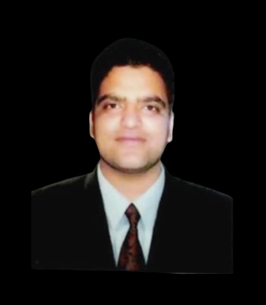

Eng. Furqan Khan
Computer Science Engineer,
Founder at LEAP Foundations,
Doctoral Researcher at IIT Ropar,
Blockchain Specialist at Wipro,
Blockchain Research Intern at TCS.
👉 Email: furkaan309@gmail.com
👉 Tel: +917780954879
Tech stack
AI & ML, Visualization
Python, Numpy, Pandas
DateTime, Matplotlib, Seaborn
Pytorch, Keras, Sklearn
Kivy & KivyMD, Bulldozer
HTML, CSS, JavaScript
Certifications
Certified Specialization in Analytics and Timeseries
Certified Diploma in Machine Learning, Artificial Intelligence and Deep Learning
Certificate in Dart Programming
Certificate in Python Programming
Certificate in Cross Platform App building
Work History
🚧 BLOCKCHAIN ANALYZER | TCS India
MAY 2021 to July 2021
The primary task of this project was to find the bugs in solidity based Ethereum blockchain. The outcome of the work was 120 bugs and defects found in the solidity based ethereum smart contracts among which till date only 40 were found
- Develop work-plans, costs and benefit analysis.
- Supervise works and operations assigned to me.
🚧 PART-TIME VOLUNTEER TUTOR | ILM INSTITUTE
July 2019 to July 2020
Worked on expanding the student community for grabbing their particular talents, Exploring the diverse STEM fields and providing insight of same to students as well mentor and taught them in most fun way.
- Amplified student engagement in Programs and Innovation.
- Organized seminars and workshops that included practicum training for students.
- Conducted student testimonials for the success stories.
- Created a vibrant student community through mentorship and guidance.
🚧 IoT devices and ArdinoUno | Robosapiens India
Jan 2018 to March 2018
Created various IoT devices with reduced code with efficient and reliable code
- Created Raspberry_Pi based Screened Processing Unit
- Dealt with RGB Lighting and pattern creation
- Implementation of various sensors with accurate readings and cost-effective code
🚧 MARKETING ANALYSIS AND PRODUCT DESING | SBI INDIA
May 2017 - July 2017
Analyzed the market and customer behaviour towards banking schemes and policies, drafted a plan for how to mend or improve the banking schemes or policies for future growth
- Designed and developed prototype & pitched original ideas forward
- Tested developed solutions and conducted use case analysis.
🚧 Networking and Design Trainng | Mobile Swithcing Center, BSNL India
January 2016 to january 2016
Practiced the commons of Networking between Academia and Real World
- Organized training manuals and curricula.
- Worked on developing synergies for action in networking domain